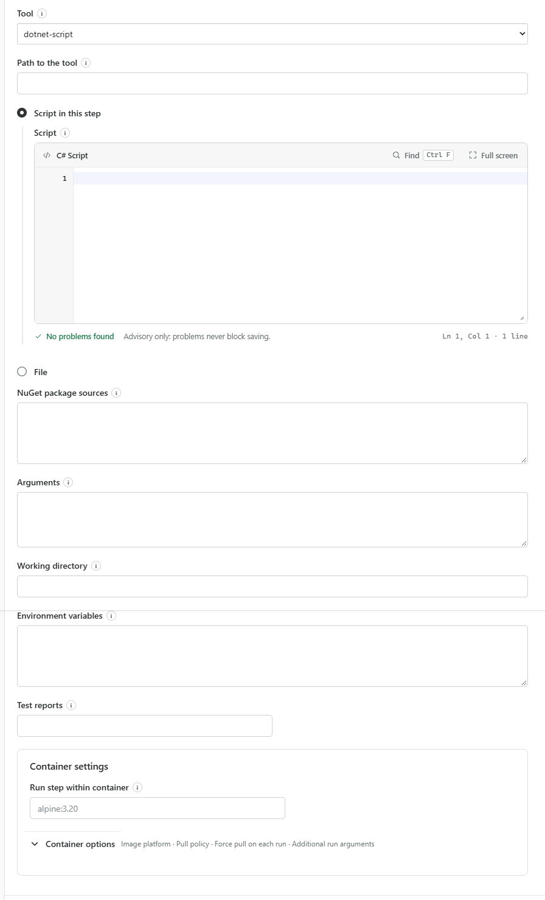

C# Script
Runs a C# script, typed into the step or from a .csx file, with dotnet-script or csi.
When to use it
Use it for build logic you would rather write in C# than in a shell script, such as editing a version file or checking asset names. It needs dotnet-script or csi on the agent.
How to set it up
- Open the build configuration and click Settings › Build Steps.
- Click Add build step. Type
C# Scriptin Filter step types if you like, then click the C# Script tile (group Build tools). - Type a Step name, for example
Stamp version. - Fill in the fields described below.
- Optional: set Execute step, Conditions and Retry on failure. See The steps list and the step editor.
- Click Save.

Every field
| Field | What it does | Default | Example |
|---|---|---|---|
| Tool | dotnet-script (a .NET global tool) or csi. Both must be installed on the agent and found on its PATH. | dotnet-script | dotnet-script |
| Path to the tool | Path of the tool chosen above. Empty finds it on the agent's PATH, and the build configuration then needs an agent that has it. May use %name% parameters. | Empty | C:\Users\build\.dotnet\tools\dotnet-script.exe |
| Script in this step / File | Choose one. Script is the C# text, in a code editor. Script file is a .csx file relative to the working directory. | Script in this step | Build/stamp.csx |
| NuGet package sources | One source per line, a URL or a folder, each passed to dotnet-script as -s. csi has no such switch and the step stops. Put no user name or password in an address: use a NuGet.Config on the agent. | Empty | https://nuget.studio.example/v3/index.json |
| Arguments | One argument per line, passed to the script. Other processes on the agent can see them, so pass a secret through the environment. | Empty | %build.number% |
| Working directory, Environment variables, Test reports, Run step within container | The same in every runner. See Fields every runner has. |
A worked example
Write the build number into a version file. Step name Stamp version, choose Script in this step:
var version = "1.4." + Args[0];
System.IO.File.WriteAllText("Build/version.txt", version);
Console.WriteLine("Version " + version);Set Arguments to %build.number%.
What you see when it runs
The console shows the dotnet-script command after a $, then the script output: Version 1.4.57.
Problems and fixes
| Problem | What to do |
|---|---|
| … was not found on this agent | Install the tool and put it on the PATH, or set Path to the tool. |
| NuGet package sources need dotnet-script | Choose dotnet-script, or empty the sources. |
| A NuGet package source must not start with a dash or hold a user name or password | Move the credentials to a NuGet.Config on the agent. |
| The C# Script step has no script / no script file | Fill in the field for the mode you chose. |